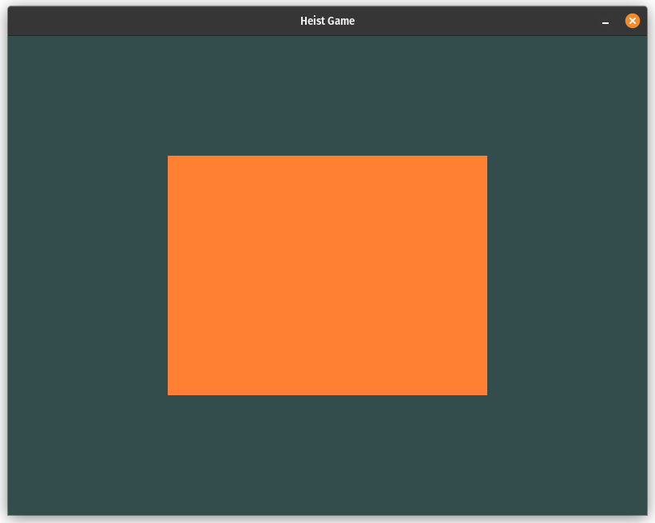

Week 0x00
Day 0x00
OpenGL is a library for creating three-dimensional graphics. The last time I used it was a couple of years ago. That was a long time ago, and I didn't do anything particularly interesting. Therefore, it can be considered that I am starting my journey from scratch.
I remember that there are two modes of operation in OpenGL: the old one, called immediate mode, and the new core-profile mode. In modern development, it's advised not to use immediate mode because it is slow, outdated, and removed from the latest versions of OpenGL; however, it is simpler and easier to start drawing with. On the other hand, core-profile mode works faster, is closer to the hardware, and therefore more complex.
Without any doubt, I decided to use the core-profile mode. Many posts and blogs on the Internet refer to the site learnopengl.com as the best resource for learning modern OpenGL, so I started with it.
The first lessons explain the basic foundation and principles of how OpenGL works from a high-level perspective, and also describe how to install the necessary libraries to start programming. I didn't encounter any particular problems with this since I already have extensive experience programming in C and understand the basic principles of that language. As a result, I managed to render a simple window.
I quickly moved on to the "Hello Triangle" lesson, which describes how to draw a triangle. At this point, I had to pay close attention. The lesson explained everything: the structure of the rendering pipeline, the coordinate system, vertex buffers, shaders, and so on. And all of this just to draw one simple triangle!
Initially, the triangle simply refused to appear on the screen. But I quickly realized that the reason was that I had changed the function's prototype to return a buffer index instead of setting it via a pointer in the parameter. In other words, I originally wrote the function as:
and called it like this:
Later, I changed the prototype to:
but didn't change the call:
The C compiler doesn't forbid passing parameters to functions with an empty parameter list and doesn't produce an error. Therefore, the correct declaration should have been:
After all the corrections, the triangle finally appeared. The next lesson shows how to draw a rectangle from two triangles using an element buffer object. There were no issues with that part:
I must admit, it wasn't easy, but I'm glad that everything worked out!